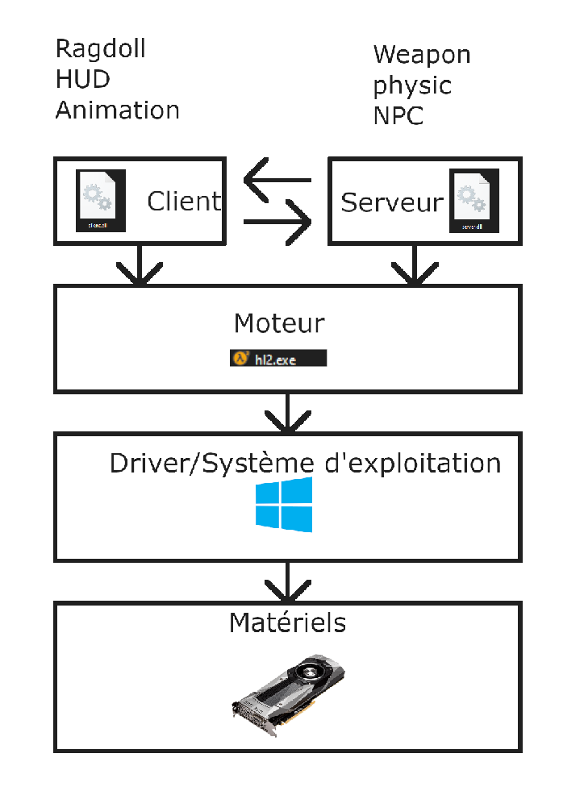
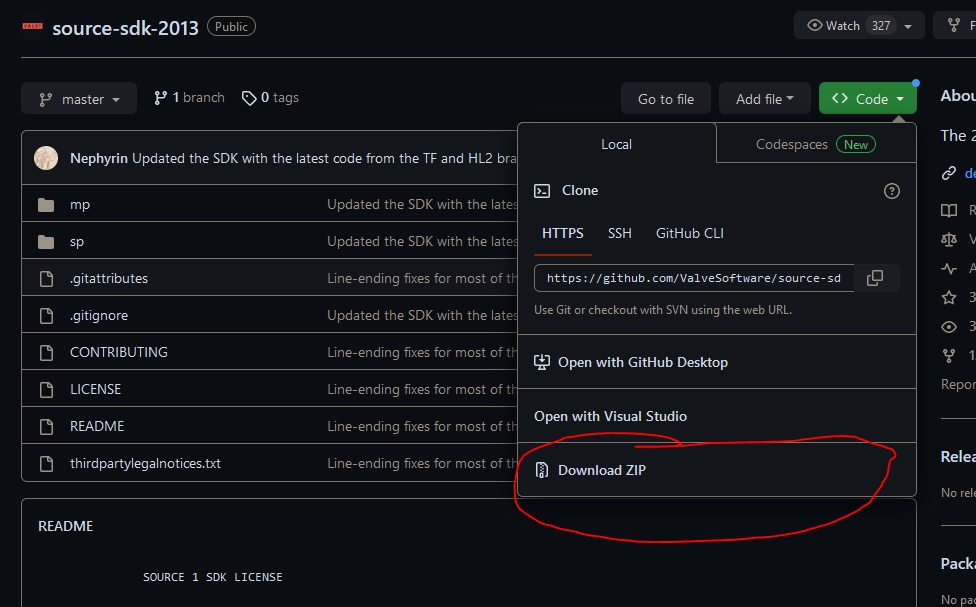
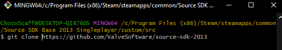
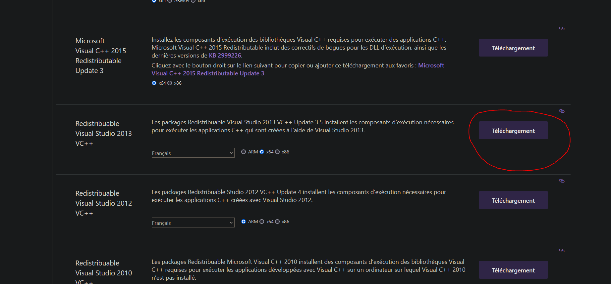
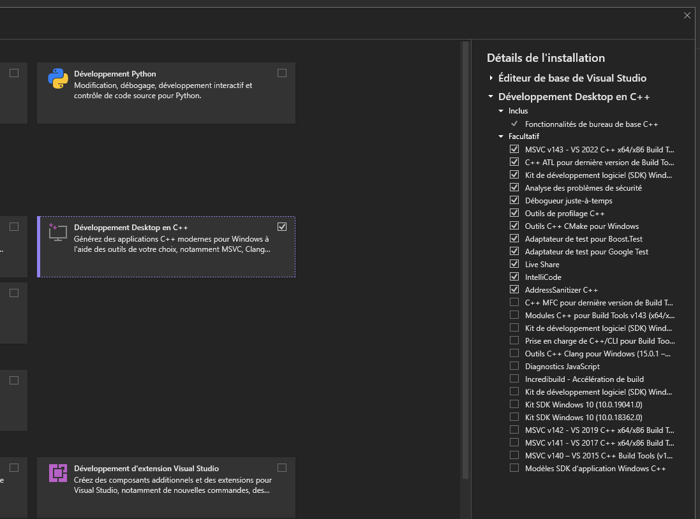
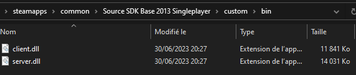
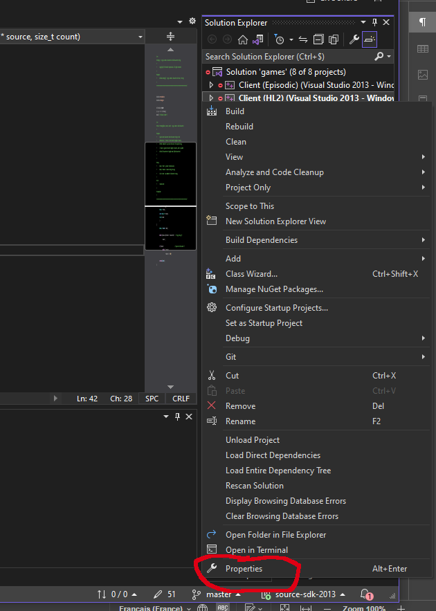
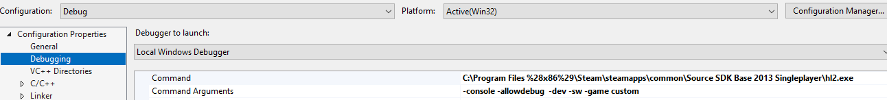
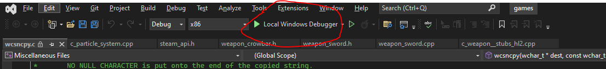
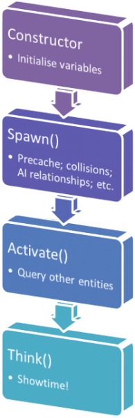

Programmation en C++
https://visualstudio.microsoft.com/fr/downloads/
https://visualstudio.microsoft.com/fr/vs/older-downloads/
https://github.com/ValveSoftware/source-sdk-2013
https://archive.org/details/en_visual_studio_community_2013_with_update_5_x86_dvd_6816332
Avec la programmation, vous pourrez créer vos propres entités que ce soit arme, npc, etc...
Nous allons pouvoir générer deux fichiers .dll qui contienne les règles de notre que ce soit côté serveur ou client.

Téléchargement et installer le code source du source sdk 2013
Maintenant, nous allons télécharger le code sur le lien Github

Si vous avez Git d'installer sur votre ordinateur, vous pouvez utiliser la commande suivante.
git clone https://github.com/ValveSoftware/source-sdk-2013

Pour apprendre à utiliser Git cliquer ici.
Compiler sur Windows
Installer Visual Studio
Pour modifier le code source de notre mode, nous avons besoin de visual studio télécharger visual studio avec le lien au début du chapitre.

Nous avons aussi besoin pour sourcesdk 2013 d'avoir les package Redistribuable de 2013.
Il faut prendre la version 64 bit (x64).

Installer la version de visual studio 2013 pour être sûr d'avoir tout l'environnement de compilation.
(Vous pouvez travailler sur visual studio 2019 ou 2022, mais il faut avoir la version 2013 installé pour qui puisse fonctionner.)
https://archive.org/details/en_visual_studio_community_2013_with_update_5_x86_dvd_6816332
Installer les fonctionnalités C++ sous Windows
Avec Visual studio installer, installer les dépendance C++.

Executer le code
Maintenant exécuter le fichier creategameprojects.bat pour créer un projet.

Un fichier game.sln devrait apparaître si ce n'est pas le cas les packages Redistribuable 2013 ne sont pas installé ou vous devez redémarrer votre pc.
Un jeu sur le source se comporte de la manière suivante un côté serveur et un côté client avec des règles dans chaque partie.
Le client et le server .dll se trouve dans le dossier bin du mod.

Solutions Explorer -> client (hl2) -> propertie
Solutions Explorer -> server (hl2) -> propertie

Sur Visual Studio allez sur Client faites un clique droit dessus cliquer sur "Properties".
Mettre en sortie le dossier bin de votre mod!
Faites de même avec Server.

Puis mettre les arguments suivant pour le debugging.
-console -allowdebug -dev -sw -game nameOfYourMod

Vous pouvez lancer le debugging de votre code.

Compiler sur Linux
Installer les fonctionnalités C++ sous Linux
Sous Ubuntu
sudo apt-get install build-essential
sudo apt-get install gcc-multilib g++-multilib
Sous Arch
sudo pacman -S base-devel gcc dpkg
Initialiser le projet.
cd [SDK_ROOT]/[GAME]/src/
bash ./creategameprojects
Installer les ressources steam
cd /
sudo mkdir valve
cd valve
sudo wget https://media.steampowered.com/client/runtime/steam-runtime-sdk_latest.tar.xz
sudo tar xvf steam-runtime-sdk_latest.tar.xz
sudo mv steam-runtime-sdk_2013-09-05 steam-runtime
#sudo chown <USER>:<GROUP> * -R
cd /valve/steam-runtime/
./setup.sh
Vous pouvez maintenant compiler.
make -f [MAKEFILE].mak
Pour compiler seulement le client en debug.
cd /[SDK_ROOT]/[GAME]/src/game/client/
make -f client_linux32_hl2.mak CFG=debug
Crée un nouveau projet
dans src/vpc_scripts/projects.vgc.
Par exemple on crée un nouveau projet client.
$Project "client"
{
"game\client\client_hl2.vpc" [($WIN32||$X360||$POSIX) && $HL2]
"game\client\client_episodic.vpc" [($WIN32||$X360||$POSIX) && $EPISODIC]
"game\client\client_custom.vpc" [($WIN32||$X360||$POSIX) && $CUSTOM]
}
On ajoute le jeu parmis nos projets dans src/vpc_scripts/default.vgc.
//-----------------------------------------------------------------------------
// DEFAULT.VGC
//
// Configurations for all Source(TM) Projects
//-----------------------------------------------------------------------------
////////////////
// Game Names //
////////////////
$Games
{
"EPISODIC"
"HL2"
"CUSTOM"
}
// Makes the VPC scripts work in the SDK's context
$Conditional "SOURCESDK" "1"
$Include "vpc_scripts\projects.vgc"
$Include "vpc_scripts\groups.vgc"
Dans le fichier client que nous avons créer.
//-----------------------------------------------------------------------------
// SERVER_CUSTOM.VPC
//
// Project Script
//-----------------------------------------------------------------------------
$Macro SRCDIR "..\.."
$Macro GAMENAME "custom" [!$SOURCESDK]
$Macro GAMENAME "custom" [$SOURCESDK]
$Include "$SRCDIR\game\server\server_base.vpc"
$Configuration
{
$Compiler
{
$AdditionalIncludeDirectories "$BASE;$SRCDIR\game\shared\hl2;.\hl2;.\custom"
$PreprocessorDefinitions "$BASE;HL2_DLL;USES_SAVERESTORE"
}
}
$Project "Server (custom)" //name of project
{
$Folder "Source Files" //Folder with source files
{
$Folder "custom"
{
$File "custom\message_player.cpp"
$File "custom\message_player.h"
}
}
}
Plus qu'ajouter le projet dans le fichier creategameprojects.bat.
devtools\bin\vpc.exe /hl2 /episodic /custom +game /mksln games.sln
Ajouter une entité
http://en.wikipedia.org/wiki/C%2B%2B
Les entités ont le mode defonctionnement suivant :
- constructor : Qui va mettre les valeurs par défaut.
- Spawn : Quant entité va apparaitre (calcule de colision, model 3D, etc...)
- Activate : Activation de l'entité.
- Think : Routine de l'entité.

Ajouter un fichier header (.h) avec notre class.
Il faut déclarer la class avec un nom et la class dont elle hérite. Pour une entité, ont hérite de CBaseEntity.
/**
* @file message_player.h
*/
#pragma once
#include "cbase.h"
/**
* @class Message_Player
*/
class Message_Player : public CBaseEntity
{
DECLARE_CLASS(Message_Player, CBaseEntity);
public:
Message_Player();
void Spawn();
};
On va ensuite écrire ce que vont faires les fonctions dans le fichier c++ (.cpp).
Ici, on va juste afficher un message dans la console et lier notre class à une entité.
/**
* @file message_player.cpp
*/
#include "cbase.h"
#include "message_player.h"
/**
*
*/
Message_Player::Message_Player() {
}
/**
*
*/
void Message_Player::Spawn() {
BaseClass::Spawn(); // Call the base class\'s Spawn function
Msg("Message player\n");
Msg("Ma grosse bite 2\n");
// Perform any necessary initialization when the entity is spawned in the game
}
LINK_ENTITY_TO_CLASS(message_player, Message_Player);
On peut placer notre entité dans hammer.
Attention : Il se peut que votre entité crée ne soit pas répertorié dans hammer et que vous avez le logo obsolète pour ajouter votre class à la liste, cf. Ajouter une entité dans le répertoire de hammer.


Changer la vitesse du joueur
Dans le fichier hl2_player.cpp.
ConVar hl2_walkspeed( "hl2_walkspeed", "150" );
ConVar hl2_normspeed( "hl2_normspeed", "190" );
ConVar hl2_sprintspeed( "hl2_sprintspeed", "320" );
Nous avons 3 valeurs de vitesse que nous pouvons modifier.
Ou dans le fichier shareddefs.h.
#define MAX_CLIMB_SPEED 200
#if defined(TF_DLL) || defined(TF_CLIENT_DLL)
#define TIME_TO_DUCK 0.2
#define TIME_TO_DUCK_MS 200.0f
#else
#define TIME_TO_DUCK 0.4
#define TIME_TO_DUCK_MS 400.0f
#endif
#define TIME_TO_UNDUCK 0.2
#define TIME_TO_UNDUCK_MS 200.0f